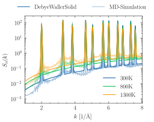

Note
Go to the end to download the full example code
LatticeDebyeModel for approximating diffuse scattering in crystals
This example showcases the increased diffuse scattering in heated crystals by
the Debye Waller Effect, as implemented by the
jaxrts.models.DebyeWallerSolid model.
For \(S_\text{Plasma}\) the model assumes a fixed value of unity, for all \(k\). A comparison with MD-simulations helps to asses the quality of this very simple model. The simulation was performed with 8000 atoms using the software package LAMMPS [Thompson et al., 2022]. For the interatomic potential, the work by and Purja Pun and Mishin [Pun and Mishin, 2017] was used, which improves on the Tersoff potential. Static ion-ion structure factors where calculated by averaging over scattering vectors realizing the same absolute \(k\), and over 10000 time steps.

from pathlib import Path
import jax.numpy as jnp
import matplotlib.lines as mlines
import matplotlib.pyplot as plt
import numpy as onp
import jaxrts
ureg = jaxrts.ureg
plt.style.use("science")
fig, ax = plt.subplots()
theta_Debye = ureg("692K")
rho0 = ureg("2.329085g/cc")
# We don't compress, so rhos is just rho0
rhos = rho0
a0 = ureg("543.0986 pm")
a = (rho0 / rhos) ** (1 / 3) * a0
try:
current_folder = Path(__file__).parent
except NameError:
current_folder = Path.cwd()
def peak_function(k):
return jnp.array(
[
[
(
(1 / ureg.angstrom)
* jaxrts.instrument_function.instrument_gaussian(
k, sigma=0.02 / ureg.angstrom
)
).m_as(ureg.dimensionless)
]
]
)
k_pos = []
intensities = []
# Calculate the peak positions and intensities
for h, k, l in [
(1, 1, 1),
(2, 2, 0),
(3, 1, 1),
(4, 0, 0),
(3, 3, 1),
(4, 2, 2),
(5, 1, 1),
(3, 3, 3),
(4, 4, 0),
(5, 3, 1),
(6, 2, 0),
(5, 3, 3),
]:
d_hkl = a / (jnp.sqrt(h**2 + k**2 + l**2))
k_pos.append(2 * jnp.pi / d_hkl)
# Calculate the form factors / forbidden peaks
I = (
jnp.exp(2j * jnp.pi * 0)
+ jnp.exp(2j * jnp.pi * (h / 4 + k / 4 + l / 4))
+ jnp.exp(2j * jnp.pi * (k / 2 + l / 2))
+ jnp.exp(2j * jnp.pi * (h / 2 + l / 2))
+ jnp.exp(2j * jnp.pi * (h / 2 + k / 2))
+ jnp.exp(2j * jnp.pi * (1 / 4 * h + 3 / 4 * k + 3 / 4 * l))
+ jnp.exp(2j * jnp.pi * (3 / 4 * h + 1 / 4 * k + 3 / 4 * l))
+ jnp.exp(2j * jnp.pi * (3 / 4 * h + 3 / 4 * k + 1 / 4 * l))
)
intensities.append(jnp.real(jnp.sqrt(I**2)))
k_pos = jnp.array([k.m_as(1 / ureg.angstrom) for k in k_pos]) / (
1 * ureg.angstrom
)
intensities = jnp.array(intensities)
PowderModel = jaxrts.models.PeakCollection(k_pos, intensities, peak_function)
# Set the plasma model to 1
S_plasmaModel = jaxrts.models.FixedSii(jnp.array([[1]]))
# Use a fixed Debye temperature
DebyeSolid = jaxrts.models.DebyeWallerSolid(S_plasmaModel, PowderModel)
probe_k = jnp.linspace(1, 8, 3000) / (1 * ureg.angstrom)
# This is a dummy setup
_setup = jaxrts.Setup(ureg("90°"), None, None, lambda x: x)
state = jaxrts.PlasmaState([jaxrts.Element("Si")], [0], [rhos], ureg("300K"))
state["Debye temperature"] = jaxrts.models.ConstantDebyeTemp(theta_Debye)
for idx, T in enumerate(jnp.array([300, 800, 1300]) * ureg.kelvin):
Sii = []
state.T_e = T
state.T_i = jnp.array([T.m_as(ureg.kelvin)]) * ureg.kelvin
for k in probe_k:
setup = jaxrts.setup.get_probe_setup(k, _setup)
Sii_out = DebyeSolid.S_ii(state, setup)
Sii.append(Sii_out[0, 0])
Sii = jnp.array(Sii)
ax.plot(
probe_k.m_as(1 / ureg.angstrom),
Sii,
label=f"{T.m_as(ureg.kelvin)}K",
color=f"C{idx}",
)
try:
kMD, SiiMD = onp.genfromtxt(
current_folder / f"MD-sims/Si{T.m_as(ureg.kelvin)}K.dat",
unpack=True,
)
MD_sort = onp.argsort(kMD)
ax.plot(kMD[MD_sort], SiiMD[MD_sort], color=f"C{idx}", alpha=0.4)
except FileNotFoundError:
pass
ax.set_yscale("log")
ax.set_ylabel("$S_{ii}(k)$")
ax.set_xlabel("$k$ [1/\\AA]")
ax.set_xlim([1, 8])
first_legend = ax.legend()
# Add a second legend
line1 = mlines.Line2D([0], [0], color="C0", label="DebyeWallerSolid")
line2 = mlines.Line2D([0], [0], color="C0", alpha=0.4, label="MD-Simulation")
second_legend = plt.legend(
handles=[line1, line2], loc="center", ncol=2, bbox_to_anchor=(0.5, 1.1)
)
# fig.add_artist(second_legend)
fig.add_artist(first_legend)
plt.show()
Total running time of the script: (0 minutes 8.327 seconds)